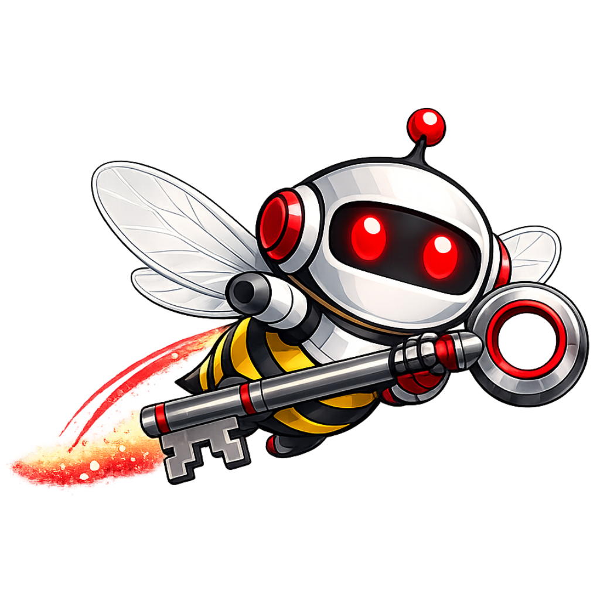
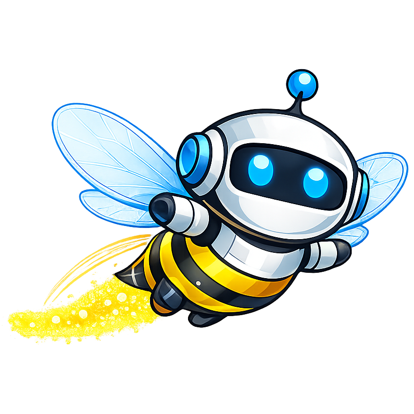

Get Your API Keys
In Pro mode, WaxFrame sends prompts directly to each AI automatically — no copy/paste, no tab switching. Each AI needs its own API key. Follow the guides below to get set up.
Free or low-cost AIs
What is an API key?
In Pro mode, WaxFrame sends your prompts directly to each AI and fills in the responses automatically — no copy/paste, no tab switching. An API key is a private password that lets WaxFrame talk to each AI on your behalf.
Without API keys you can use WaxFrame Free — the same hive workflow, but you copy and paste prompts manually between WaxFrame and each AI's web interface. API keys are only needed for the fully automated Pro experience.
Your keys never leave your device
Keys are stored in your browser only. They go directly from your browser to each AI provider. WaxFrame has no server — your keys are never shared with any third party.
WaxFrame — open source, no server, no tracking. Learn more →
gemini-2.5-flash
Google's fast multimodal model
- Go to aistudio.google.com/apikey and sign in with your Google account.
- Click Create API Key and copy the key shown.
- Paste it into the Gemini field in WaxFrame and press Enter.
Gemini is completely free — no credit card required. A generous number of requests per day at no cost. Most WaxFrame sessions stay within the free limit easily.
deepseek-chat
DeepSeek's flagship model
- Go to platform.deepseek.com/api_keys and sign up.
- Click Create new API key and copy it.
- Paste it into the DeepSeek field in WaxFrame and press Enter.
DeepSeek is 10–20x cheaper per token than OpenAI or Anthropic. Add credit at platform.deepseek.com → Top Up — $5 gets you a lot of usage. Excellent Builder choice on a budget.
Pay-as-you-go AIs
gpt-4.1
OpenAI's flagship model
- Go to platform.openai.com/api-keys and sign in.
- Click Create new secret key, give it a name, click Create.
- Copy the key immediately — it is shown only once.
- Paste it into the ChatGPT field in WaxFrame and press Enter.
Your ChatGPT subscription does NOT include API access — the API is completely separate and pay-as-you-go. Go to platform.openai.com → Billing and add credit ($5–$10 gets you plenty of testing).
claude-sonnet-4-6
Anthropic's capable everyday model
- Go to console.anthropic.com/settings/keys and sign in.
- Click Create Key, give it a name (e.g. "WaxFrame"), click Create.
- Copy the key immediately — shown only once.
- Paste it into the Claude field in WaxFrame and press Enter.
Requires credit balance. Go to console.anthropic.com → Billing and add credit (~$5 minimum). You are only charged for what you use.
grok-4
- Go to console.x.ai and sign in with your X account.
- Navigate to API Keys and generate a new key.
- Paste it into the Grok field in WaxFrame and press Enter.
Requires credit balance — add at console.x.ai → Billing. API availability may vary — check the console for current status.
sonar-pro
- Go to console.perplexity.ai and sign in.
- Click Generate under API Keys and copy the key.
- Paste it into the Perplexity field in WaxFrame and press Enter.
Requires credit balance — add at console.perplexity.ai → Billing → Add Credits.
Perplexity offers a recurring API subscription as low as $5/month — but you must enable auto-pay during signup to lock in that price. Without auto-pay, the recurring rate jumps to $50/month. The $5 tier provides a solid monthly credit allocation that covers most WaxFrame usage without thinking about per-call costs.

Know Your Hive
Every AI in your hive has its own personality, strengths, and quirks. Knowing how each one behaves helps you pick the right Builder, get the most out of your reviewers, and decide when to toggle them off. This guide is based on real-world observations using WaxFrame in production — and on the hive itself, since each AI's profile below was refined by passing it through the hive for self-description and peer review.
A solid all-rounder for both Builder and Reviewer roles — fast, reliable, and consistent. A strong alternative Builder if DeepSeek is unavailable. As a reviewer, it effectively signals document convergence during final refinement rounds.
When ChatGPT returns NO CHANGES in later rounds, treat this as a sign of document convergence rather than a reason to toggle it off.
As a reviewer, Claude excels at catching subtle issues with tone, redundancy, and flow that others miss. As a Builder, it is reliable and format-compliant. Higher cost, but worth it for quality-sensitive projects.
Claude tends to give the most thoughtful reasoning for its suggestions — clarifying the logic behind each change.
The default Builder choice. Rarely deviates from instructions, making it a stable foundation. Fast, cost-effective, and reliable across document types.
DeepSeek + Gemini is the most cost-effective hive combination — one paid Builder at rock-bottom prices, one free reviewer.
Your primary free reviewer. Great for catching grammar, word choice, and structural issues. Use it as a reviewer and let a paid AI serve as the Builder.
Gemini + DeepSeek is the minimum viable paid hive — two AIs, one free, total cost often under a cent per round for short documents.
A valuable reviewer in early rounds, pushing hard for stronger phrasing and action verbs. However, its tendency to revisit resolved points may prolong final convergence.
Toggle Grok off in later refinement rounds once key decisions are finalized to avoid repetitive suggestions.
A specialized reviewer for factual or research-heavy documents. Its search-aware training makes it uniquely effective at spotting unsupported claims, though its inconsistent output formatting may complicate document reconstruction.
Perplexity is particularly useful early in a project when the document is rough and needs fact-checking input from the hive.
You don't need all six AIs every round. Toggle them on or off at any time, except for your Builder. For a lean setup, consider DeepSeek as your Builder, Claude for nuanced feedback, Grok for early assertive input, and Gemini for free support — that's a well-balanced hive. A smaller hive completes rounds faster, while the full hive ensures the most thorough review possible.
Toggle, don't remove. Use the checkboxes on the work screen to toggle individual AIs on or off between rounds while preserving their API keys. This is the most efficient way to manage persistent reviewers.
Your Builder is the most important choice. The Builder processes the entire document along with all reviewer suggestions each round, using significantly more tokens than any reviewer. Choose an AI you trust with large amounts of text, one with sufficient rate limits and token budget for your project scope.
Watch for convergence signals. When multiple AIs start returning NO CHANGES in the same round, the hive signals that the document has converged and may be ready for finalization or manual review.